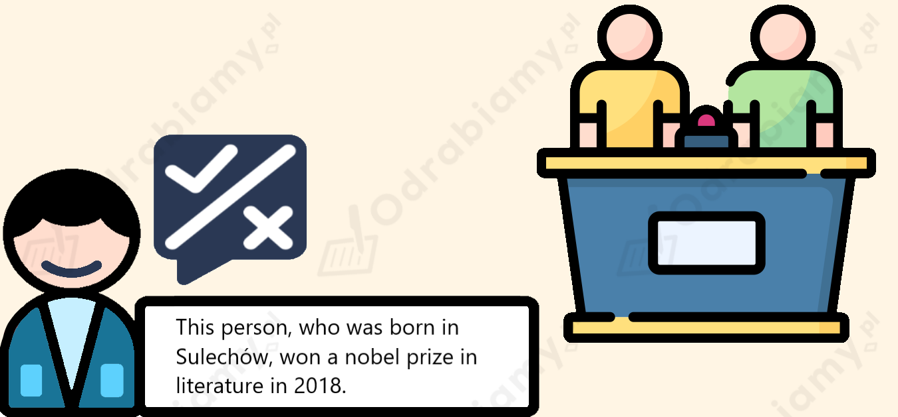

Poniżej przedstawiona jest przykładowa odpowiedź do tego zadania. Każdy uczeń może rozwiązać je w inny sposób. Poniższe rozwiązanie traktuj jako wzór, na podstawie którego stworzysz własną odpowiedź.
1. Yes, there is this one place where I'd like to live one day. It's in Spain. I'd like to live there because the weather is fantastic. It's much warmer than in Poland.
(Tak, jest takie jedno miejsce, w którym chciał(a)bym kiedyś zamieszkać. Znajduje się ono w Hiszpanii. Chciał(a)bym tam zamieszkać, ponieważ pogoda jest fantastyczna. Jest dużo cieplej niż w Polsce.)
2. My aunt works for an IT company. I'd like to have a job like hers one day. She's a cyber security specialist.
(Moja ciocia pracuje w firmie informatycznej. Chciał(a)bym kiedyś mieć taką pracę jak ona. Jest specjalistką od cyberbezpieczeństwa.)
Przykładowa odpowiedź:
Tom and Edward are strangers. They meet one day and decide to switch places, because they look like twins.
(Tom i Edward są nieznajomymi. Poznają się pewnego dnia i postanawiają zamienić się miejscami, ponieważ wyglądają jak bliźniacy.)
Fragment w tekście: "The boys looked like twins, but the lives which they lived were very different. Curious to see the other side of life, the boys switched places." - Chłopcy wyglądali jak bliźniacy, ale życie, które obaj wiedli, było zupełnie inne. Ciekawi, jak wygląda druga strona życia, zamienili się miejscami.
1. Nine.
Uzasadnienie: w tekście znajduje się 9 zdań przydawkowych. Wprowadzone są zaimkami względnymi, takimi jak who (tu: który), which (tu: które), where (gdzie), that (tu: którzy), when (kiedy) i whose (tu: którego).
2a. who / that
Fragmenty w tekście: "Tom was a boy who lived in the (...). (...) the rich people that lived in the royal palace." - Tom był chłopcem, który mieszkał w (...). (...) bogaci ludzie, którzy mieszkali w pałacu królewskim.
b. which / that
Fragmenty w tekście: "(...) a better life, which would be free of (...). (...) a decision that would change their lives (...)." - (...) lepsze życie, które byłoby wolne od (...). (...) decyzja, która miała odmienić ich życia (...).
c. where
Fragment w tekście: "(...) a place where he could sit (...)." - (...) miejsce, w którym mógł usiąść (...).
d. when
Fragment w tekście "He always went there when he had nothing else to do." - Szedł tam zawsze, kiedy nie miał nic innego do roboty.
e. whose
Fragment w tekście: "(...) a boy whose beautiful clothes (...)." - (...) chłopiec, którego piękne ubrania (...).
3. Yes.
Uzasadnienie: podkreślone fragmenty zawierają zdania przydawkowe niedefiniujące. Są oddzielone przecinkiem i wprowadzają dodatkową informację, bez której zdanie ciągle ma sens.
Indywidualne
Uwaga! W zdaniach przydawkowych definiujących używamy następujących zaimków:
who/that - w odniesieniu do osób.
which/that - w odniesieniu do rzeczy, zwierząt i miejsc (kiedy opisujemy, że jakieś są).
where - w odniesieniu do miejsc (kiedy opisujemy, że coś się w nich znajduje albo dzieje).
when - w odniesieniu do okresu czasu (kiedy opisujemy, że coś się wtedy dzieje).
whose - kiedy chcemy opisać posiadanie albo pokrewieństwo.
1. where
2. which/that
3. when
4. who/that
5. whose
Poniżej przedstawiona jest przykładowa odpowiedź do tego zadania. Każdy uczeń może rozwiązać je w inny sposób. Poniższe rozwiązanie traktuj jako wzór, na podstawie którego stworzysz własną odpowiedź.
1. A place where I like to hang out with my friends is our local pizzeria.
(Miejsce, gdzie lubię spędzać czas z przyjaciółmi to nasza miejscowa pizzeria.)
2. An object that is important to my mum is her watch.
(Przedmiot, który jest ważny dla mojej mamy, to jej zegarek.)
3. A stranger helped me when I was on holiday with my parents. I was 6 years old and I got lost. The lady helped me find my parents.
(Nieznajoma osoba pomogła mi, gdy byłem/am na wakacjach z rodzicami. Miałem/am 6 lat i zgubiłem/am się. Ta pani pomogła mi odnaleźć rodziców.)
4. Ms Kowalska is a person who is one of my neighbours. She's very nice and she's got a beautiful cat.
(Pani Kowalska to osoba, która jest jedną z moich sąsiadek. Jest bardzo miła i ma pięknego kota.)
5. My aunt is a relative whose surname is different than mine. It's because she changed her name after she got married.
(Moja ciotka jest krewną, której nazwisko jest inne niż moje. To dlatego, że zmieniła nazwisko po wyjściu za mąż.)
Uwaga! Zdania przydawkowe niedefiniujące zawierają dodatkowe informacje odnośnie osoby, rzeczy, pojęcia lub miejsca, którego dotyczą. Są oddzielone przecinkami i używamy w nich następujących zaimków:
who - w odniesieniu do osób.
which - w odniesieniu do rzeczy, zwierząt i miejsc (kiedy opisujemy, że jakieś są).
where - w odniesieniu do miejsc (kiedy opisujemy, że coś się w nich znajduje albo dzieje).
when - w odniesieniu do okresu czasu (kiedy opisujemy, że coś się wtedy dzieje).
whose - kiedy chcemy opisać posiadanie albo pokrewieństwo.
W zdaniach przydawkowych niedefiniujących nie używamy that.
1. (przykład)
2. Edinburgh, where my father was born, is a beautiful city.
3. My next-door neighbours, who used to live in Canada, are really friendly.
4. That was the final match of the season, which was our best season ever.
5. Freddie Mercury, whose songs are all-time classics, is my favourite singer.
1. (przykład)
2. whose
My best friend, whose birthday is on the same day as mine, is three hours older than me.
Uzasadnienie: do wprowadzenia informacji o czyimś posiadaniu, używamy zaimka whose. To zdanie podaje dodatkową informację, bez której zdanie ciągle ma sens, dlatego jest to zdanie niedefiniujące - należy oddzielić je przecinkami.
3. when
Remember that week when we were doing our exams? It was really hot.
Uzasadnienie: do wprowadzenia informacji o okresie czasu, używamy when. To zdanie podaje informację, która jest potrzebna, żeby zdanie miało sens, dlatego jest to zdanie definiujące - nie oddzielamy go przecinkami.
4. that
She found a flatmate that she can trust.
Uzasadnienie: do wprowadzenia informacji o osobie, w zdaniu definiującym możemy użyć that. To zdanie podaje informację, która jest potrzebna, żeby zdanie miało sens, dlatego jest to zdanie definiujące - nie oddzielamy go przecinkami.
5. which
The city of Ankara, which is the capital of turkey, is in Asia.
Uzasadnienie: do wprowadzenia informacji o jakimś miejscu, że jakieś są, używamy zaimka which. To zdanie podaje dodatkową informację, bez której zdanie ciągle ma sens, dlatego jest to zdanie niedefiniujące - należy oddzielić je przecinkami.
Odpowiedź:
Zaimki which, who albo that możemy pominąć w zdaniach definiujących, jeśli pełnią funkcję dopełnienia w zdaniu (jeśli występuje po nich rzeczownik albo zaimek osobowy, który jest podmiotem). Taki zaimek występuje w zdaniu 4.
Odpowiedź:
It's the word "your".
Uzasadnienie odpowiedzi:
Odpowiedzią zagadki jest wyraz "your". Bez zaimka "your" w "your enemy" i "your friend", "twój wróg" i "twój przyjaciel" nie są już "twoi".
Poniżej przedstawiona jest przykładowa odpowiedź do tego zadania. Każdy uczeń może rozwiązać je w inny sposób. Poniższe rozwiązanie traktuj jako wzór, na podstawie którego stworzysz własną odpowiedź.
Rozwiązanie na obrazku:

Tłumaczenie:
Ta osoba, która urodziła się w Sulechowie, zdobyła nagrodę Nobla w dziedzinie literatury w 2018 roku.
Rozwiązanie zagadki: Olga Tokarczuk